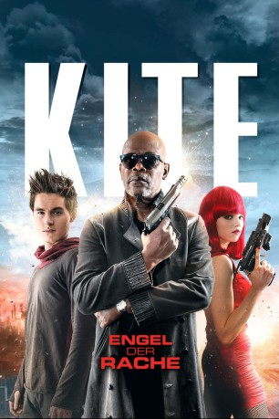

Alternativ: Kite gesehen am 09.03.2015
gesehen am 09.03.2015
 
 IMDB-Wertung: 4.4 / 10
IMDB-Wertung: 4.4 / 10  Metascore:
Metascore: 
Polizistentochter Sawa ermittelt auf eigene Faust im Mordfall ihres Vaters. Dieser wurde vermutlich das Opfer eines abtrünnigen Cops aus der eigenen Einheit. Unterstützung findet das junge Mädchen beim abgebrühten Ex-Partner ihres Vaters Karl, der zwar selbst ordentlich Dreck am Stecken hat, aber im Mordfall genügend Solidarität für seinen ehemaligen Kollegen aufbringen kann, um dessen Tochter bei der Umsetzung ihrer Rachepläne zu helfen. Gemeinsam mit einem mysteriösen Freund aus Sawas Vergangenheit namens Oburi lässt sie sich zu einer unbarmherzigen Tötungsmaschine ausbilden, die den Tod ihres Erzeugers mit allen Mitteln rächen will. Das Trio geht dabei kompromisslos zu Werke und mischt die kriminelle Unterwelt der Stadt gehörig auf
Jahr: 2014
Dauer: 90 Minuten
FSK: 16
Land: USA Studio: Anchor Bay EntertainmentTonspuren: DTS - ,
Untertitel:
Auflösung: 1080p (1920×808) Größe: 2990 MB
Genre: Action, Krimi, Thriller
Regisseur: Ralph Ziman
Drehbuch: Yasuomi Umetsu, Brian Cox
Soundtrack: Paul Hepker
Darsteller:
 Callan McAuliffe als Oburi
Callan McAuliffe als Oburi Samuel L. Jackson als Lieutenant Karl Aker
Samuel L. Jackson als Lieutenant Karl AkerDatei: X:\FSK18-2014\Kite - Engel der Rache (2014, FSK16, 1920x808) 3D.mkv seit 16.02.2015
Festplatte: FSK18
 Es gibt insgesamt 27 Filme in der Gruppe 'FSK18-2014'
Es gibt insgesamt 27 Filme in der Gruppe 'FSK18-2014'